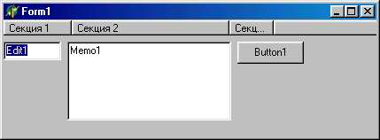
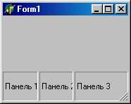

THeaderControl - управляющий заголовок
Компонент THeaderControl представляет собой многоколончатый заголовок с регулируемыми размерами колонок (секций). Каждая колонка (секция) заголовка может содержать текст и/или графику. Компонент способен обрабатывать событие onResize, которое возникает при каждом изменении размеров любой секции. В ходе обработки этого события программа обычно соответствующим образом изменяет линейные размеры столбцов таблицы или подобной структуры, с которой связан компонент.
В программе, окно которой показано на рис. 18.30, компонент THeaderControl используется для управления положением и линейными размерами трех других компонентов. Для реализации программы выполните следующее:
- Положите на пустую форму компоненты THeaderControl, ТЕdit, TMemo и TButton. По умолчанию HeaderControll .Align =alTop - убедитесь в этом и установите свойство, если это не так. Положение и размеры других компонентов не имеют значения.
- Создайте такие обработчики событий OnCreate для формы Form1, а также OnResize и OnSectionResize для компонента HeaderControll:

Рис. 18.30. Пример использования компонента THeaderControl для управления положением и размерами других компонентов
const
Delta = 10;// Зазор между границами заголовка и компонентами
procedure TFormI.FormCreate(Sender: TObject);
var
HSection: THeaderSection;
k: Integer;
begin
// Создаем три секции заголовка:
with HeaderControll do
for k := 0 to 2 do
begin
HSection := Sections.Add;
HSection.Text := 'Секция №' + IntToStr(k);
HSection.Width := Forml.Width div 3;
HSection.MinWidth := 3 * Delta;
end;
end;
procedure Tform1.HeaderControllResize(Sender: TObject);
// Устанавливает положение и размеры компонентов
begin
with HeaderControll do
begin
Editl.Left := Delta;
Editl.Top := HeaderControll.Height + 1;
Editl.Width := Sections.Items[0].Width - 2 * Delta;
Memol.Left := Sections.Items[1].Left + Delta;
Memol.Top := HeaderControll.Height + 1;
Memol.Width := Sections.Items[1].Width - 2 * Delta;
Buttonl.Left := Sections.Items[2].Left + Delta;
Buttonl.Top := HeaderControll.Height + 1;
Buttonl.Width := Sections.Items[2].Width - 2 * Delta;
end
end;
procedure TFormI.HeaderControllSectionResize(
HeaderControl: THeaderControl; Section: THeaderSection);
begin
HeaderControllResize(Self)
end;
He забудьте определить в области видимости обработчиков FormCreate И HeaderControllResize глобальную константу Delta.
Для заголовка создается объект класса THeadersections, определяющий секции заголовка. Его свойство
property Items[Index: Integer]: THeaderSection;
открывает доступ к индексированным объектам-секциям класса THeaderSection. Свойства класса THeaderSection:
|
property Alignment: TAlignment; |
Определяет выравнивание текста: taLeftJustify - прижат влево; taCenter - центрирован по горизонтали; taRight Justify - прижат вправо |
|
property AllowClick:.Boolean; |
Разрешает/запрещает генерацию события OnSectionClick при щелчке по секции |
|
property Left: Integer; |
Определяет положение левой границы секции относительно границ компонента (в пикселях) |
|
property MaxWidth: Integer; |
Определяет максимальную ширину секции в пикселях |
|
property MinWidth: Integer; |
Определяет минимальную ширину секции в пикселях |
|
property Right: Integer; |
Определяет положение правой границы секции относительно границ компонента (в пикселях) |
|
THeaderSectionStyle = (hsText, hsOwnerDraw) ; property Style: THeaderSectionStyle; |
Определяет способ формирования секции: hsText - секция содержит только текст и изображается автоматически; hsOwnerDraw - секция прорисовывается программой |
|
Property Width: Integer; |
Содержит текущую ширину секции в пикселях |
Метод function THeaderSections.Add: THeaderSection;
добавляет очередную секцию заголовка. Некоторые свойства класса
THeaderSection:
|
property AllowClick: Boolean-property DisplayName: String; property Imagelndex: TImageIndex; |
Если содержит True, разрешает щелкнуть по секции заголовка как по кнопке. В этом случае управление передается в обработчик события OnSectionClick Имя заголовка секции Указывает индекс изображения из хранилища images, которое будет появляться следом за текстом заголовка |
|
property MaxWidth: Integer; property MinWidth: Integer; type THeaderSectionStyle == (hsText, hsOwnerDraw) ; |
Определяет максимальную и минимальную ширину секции Определяет тип секции: hsText - секция содержит только текст; hsOwnerDraw - секция нуждается в программной прорисовке |
|
property Style: THeaderSectionStyle; property Text: String; |
Содержит текст секции |
Свойства Компонента THeaderControl:
|
property Canvas: TCanvas; |
С помощью этого свойства можно изображать графику в секциях заголовка |
|
property HotTrack: Boolean; |
Разрешает/запрещает цвето выделение секции, над которой располагается указатель мыши |
|
property Sections: THeaderSections; |
Содержит секции заголовка |
Для компонента определены следующие события:
|
TDrawSectionEvent = procedure( Header-Control: THeaderControl; Section: THeaderSection; const Rect: TRect; Pressed: Boolean) of object; property OnDrawSection: TDrawSectionEvent; |
Возникает при необходимости прорисовать секцию, для которой установлен СТИЛЬ hsOwnerDraw: Section - объект-секция; Rect - прямоугольник прорисовки;Pressed -признак нажатой кнопки мыши |
|
property OnResize: TNotifyEvent; TSectionNotifyEvent = procedure( Head- erControl: THeaderControl; Section: THeaderSection) of object; property OnSectionCli.ck: TSectionNoti fyEvent; |
Возникает при изменении размеров компонента возникает при щелчке мышью по секции Section |
|
TSectionNotifyEvent = procedure( Head- erControl: THeaderControl; Section: THeaderSection) of object; property OnSectionResize: TSectionNo tifyEvent; |
Возникает при изменении размеров секции Section |
|
TSectionTrackState = (tsTrackBegin, tsTrackMove, tsTrackEnd) ; TSectionTrackEvent = procedure( Head- erControl: THeaderControl; Section: THeaderSection; Width: Integer; State: TSectionTrackState) of objects- property OnSectionTrack: TSection TrackEvent; |
Возникает при изменении размеров секции и позволяет обработать три возможных состояния: tsTrackBegin - начало переме щения границы;tsTrackMove - идет перемещение границы; tsTrackEnd - конец перемещения границы |
TStatusBar - информационная панель
Компонент TStatusBar предназначен для создания панелей состояния, которые обычно располагаются в нижней части основной формы. Компонент может иметь несколько секций, а также кнопку изменения размеров окна, в которое он помещен.

Рис. 18.31 . Пример компонента с тремя панелями и кнопкой изменения размеров окна
На рис. 18.31 показан компонент TStatusBar с тремя панелями и кнопкой изменения размеров окна, созданный таким обработчиком события OnCreate для формы Form1(предварительно на пустую форму положите компонент TSatusBar):
procedure TFormI.FormCreate(Sender: TObject);
var
Panel: TStatusPanel;
k: Integer;
begin
with StatusBarl do
for k := 0 to 2 do
begin
Panel := Panels.Add;
Panel.Text := 'Панель №' + IntToStr(k);
Panel.. Width := Forml. Width div 3
end;
end;
С компонентом связывается объект класса TStatusPanels, который определяет панели компонента. Каждая панель относится к классу TstatusPanel и имеет такие свойства:
|
property Alignment: TAlignment; |
Определяет выравнивание текста относительно границ секции; taLeftJustify: прижимается влево; taCenter - центрируется по горизонтали; taRightJustify - прижимается вправо |
|
property Bevel: TStatusPanel-Bevel; |
Определяет стиль рамки секции: pbNone -нет рамки; pbLowered - вдавленная рамка; pbRaised - приподнятая рамка |
|
type TStatusPanelStyle = (psText, psOwnerDraw); property Style: TStatusPanelStyle; property Text: String; property Width: Integer; |
Определяет способ формирования изображения панели: psText - панель содержит только текст и изображается автоматически; psOwnerDraw - панель прорисовывается программой Определяет текст надписи в секции Определяет ширину секции в пикселях |
|
Свойства компонента TStatusBar: |
|
|
property Canvas: TCanvas; |
Канва для прорисовки панелей |
|
property Panels: TStatusPanels; |
Содержит объекты-панели. Свойство TStatusPanels.items [index: Integer]: TStatusPanei открывает доступ к панели по ее индексу |
|
property SimplePanel: Boolean; |
Запрещает/разрешает создание нескольких панелей. Если содержит True, компонент имеет единственную панель |
|
property SimpleText: String; |
Содержит текст панели для sim-plePanel=True |
|
property SizeGrip: Boolean; |
Разрешает/запрещает вставку кнопки изменения размеров окна. Игнорируется, если AlignoalBottom |
|
Для компонента определены такие события: |
|
|
TDrawPanelEvent = procedure( StatusBar: TStatusBar; Panel: TStatusPanei; const Rect: TRect) of object-property OnDrawPanel: TDrawPanelEvent; |
Возникает при необходимости прорисовки панели Panel, если ее свойство Style определено как psOwnerDraw: Rect - прямоугольник прорисовки |
|
Property OnResize: TNo.tifyEvent; |
Возникает при изменении размеров компонента |